← Índice de los 69 tutes de IDA
Tute 51 · Drivers en kernel
se conecta con: Fuera de alcance
INTRODUCCION AL REVERSING CON IDA PRO DESDE CERO PARTE 51 KERNEL.
VIDEOTUTES.
Vamos antes de comenzar los VIDEOTUTES a compilar y reversear un poco los que hicimos en la parte anterior y algún que otro driver mas, para ir familiarizándonos con la forma en que trabajan.
MAS DRIVER EN KERNEL
En el caso del sencillo driver de la parte 50, es un simple hola mundo muy fácil de reversear, ya vimos que cuando lo compilamos con el viejo WDK 7.1 es un par de simples rutinas, y en el nuevo WDK 10 tiene un par de funciones antes de inicialización, pero llega a lo mismo, no hay una funcionalidad diferente.
Aquí estamos en el que sería el punto de entrada al driver DriverEntry en el viejo driver hecho en WDK 7.1.
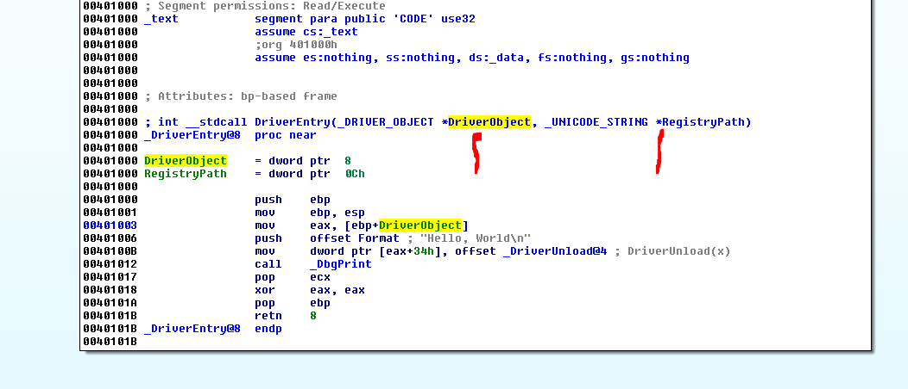
Vemos por los asteriscos que los dos argumentos son dos punteros o sea de largo 4 bytes, uno a una estructura _DRIVER_OBJECT y el otro a una estructura _UNICODE_STRING, veamos las mismas, ya que IDA las detecta debe tener guardado como esta compuesta cada una.
EN MSDN.
DRIVER OBJECT
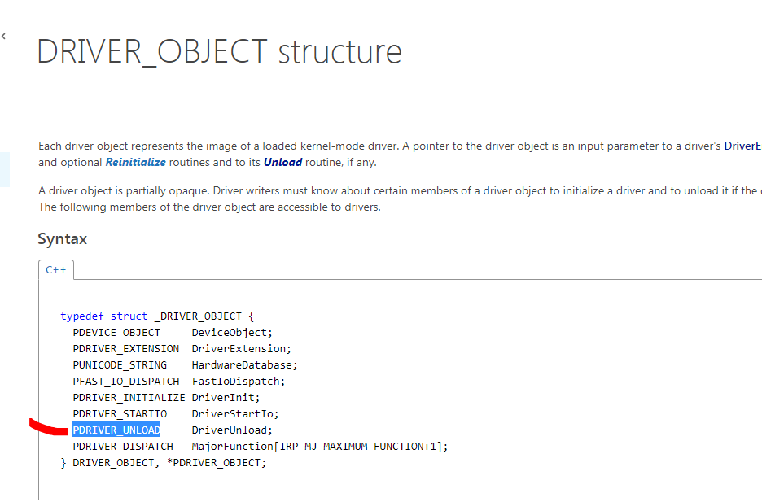
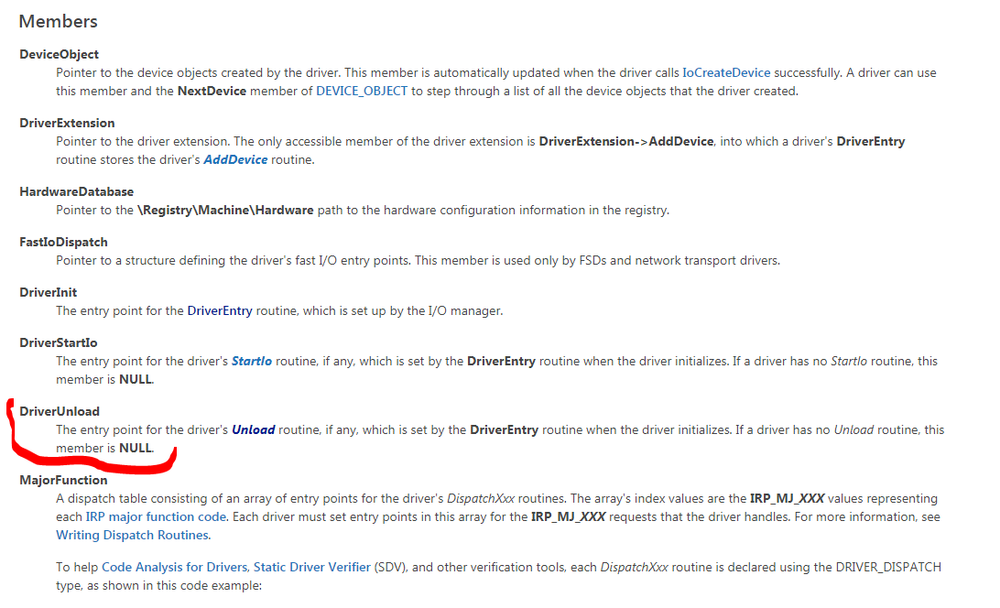
En la pestaña estructuras no están, pero no olvidemos que en LOCAL TYPES a veces hay mas estructuras, nos fijaremos también allí.
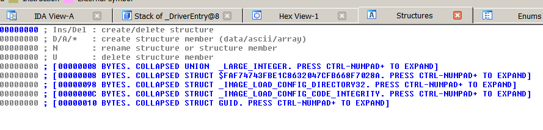
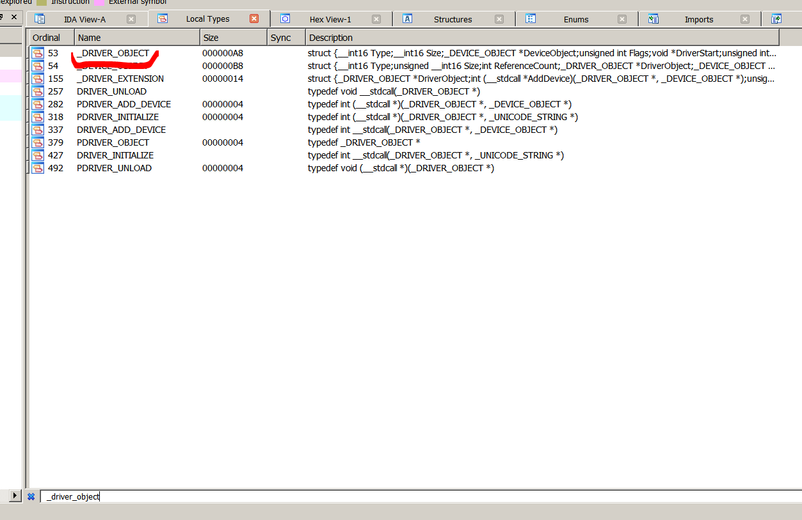
Bueno ahí está, la importaremos haciendo clic derecho -SYNCRONIZE TO IDB.
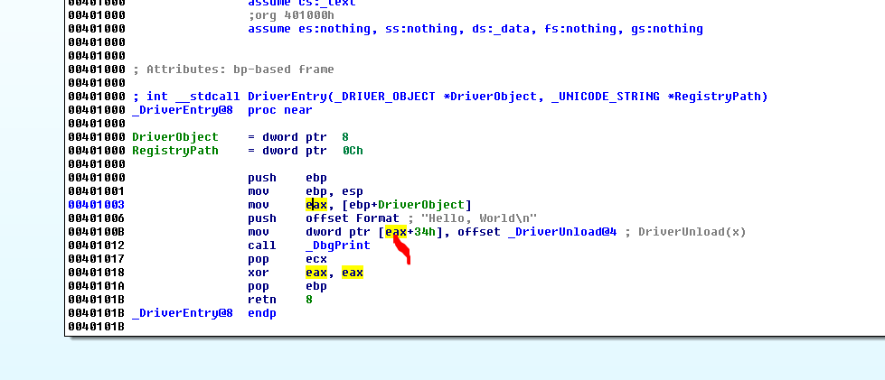
Como carga la dirección de la estructura en EAX, sabemos que en EAX+34h es algún campo de la estructura, apretemos T a ver cuál es.
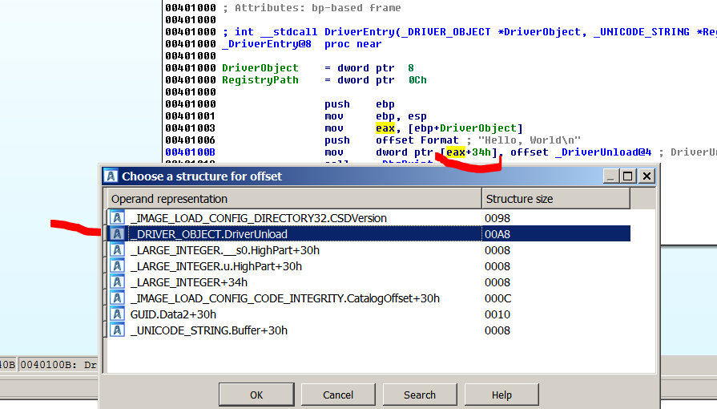
De las estructuras que hay cargadas elijo _DRIVER_OBJECT y es el campo DriverUnload.
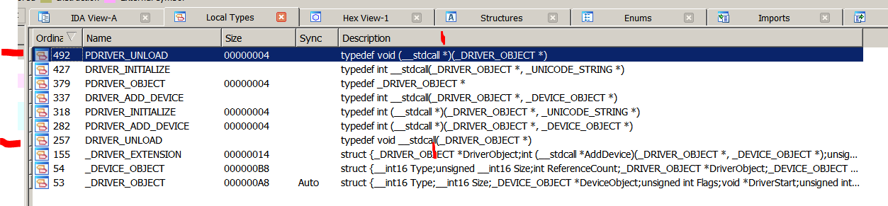
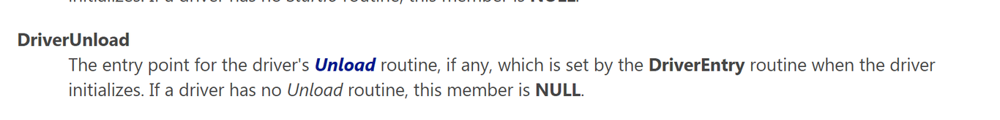
Traducido al castellano es una variable tipo puntero en la estructura que guarda la dirección de una función que el sistema llamara al descargar el driver, vemos allí arriba que el tipo de función está definido, su argumento es un puntero a _DRIVER_OBJECT y arriba de todo vemos la definición de PDRIVER_UNLOAD que obviamente es la dirección ya que es un puntero a esa misma función. (vemos el asterisco en la definición).
Así que ese campo está destinado para guardar la dirección de la función que el sistema llamara cuando se descargue el driver.
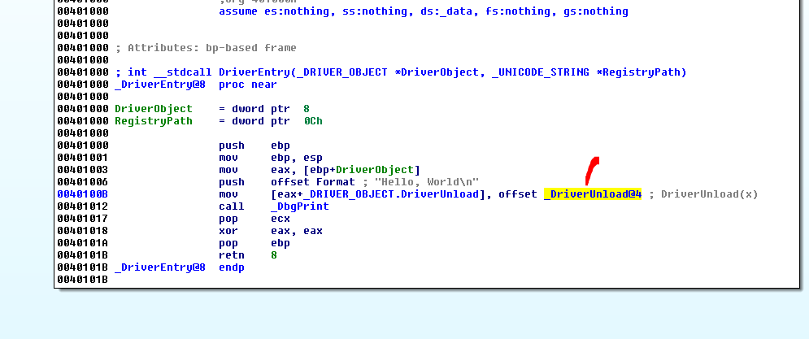
En nuestro caso IDA nos muestra offset ya que es la dirección de la función _DriverUnload clickeando en DEMANGLE NAMES - NAMES se ve más lindo.
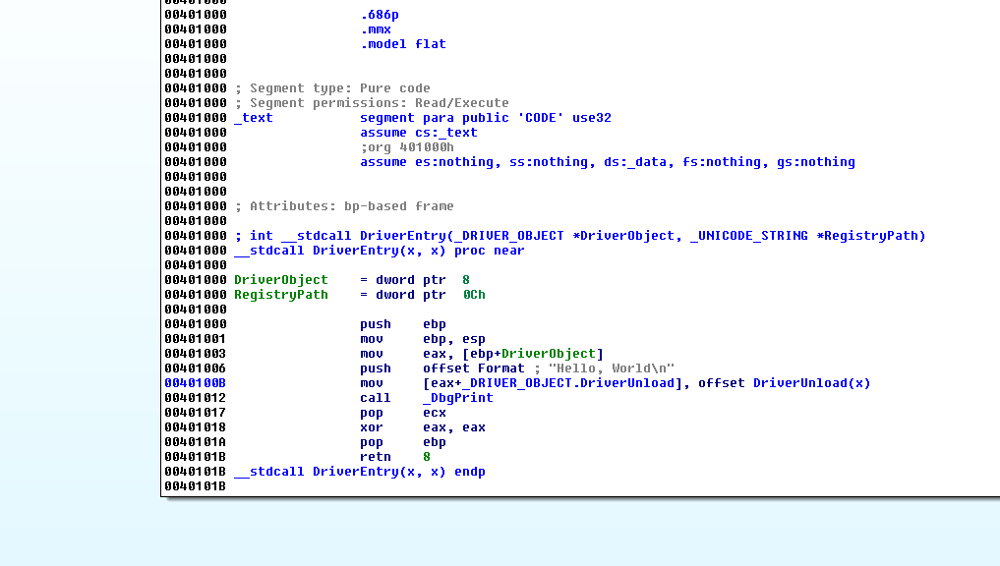
Asi que cuando arranca el driver viene por aquí, y imprime “Hello World” cada vez que arranca, mediante la función _DbgPrint y guarda la dirección de la función que ejecutara al descargarse el driver.
Recordemos que la función que creamos DriverUnload en nuestro código se debe ajustar al tipo definido antes o sea su argumento debe ser un puntero a _DRIVER_OBJECT y asi es nuestro argumento es del tipo PDRIVER_OBJECT como dicen las definiciones de la función en el código fuente.
#include <ntddk.h>
void DriverUnload( PDRIVER_OBJECT pDriverObject) { DbgPrint("Driver unloading\n"); }
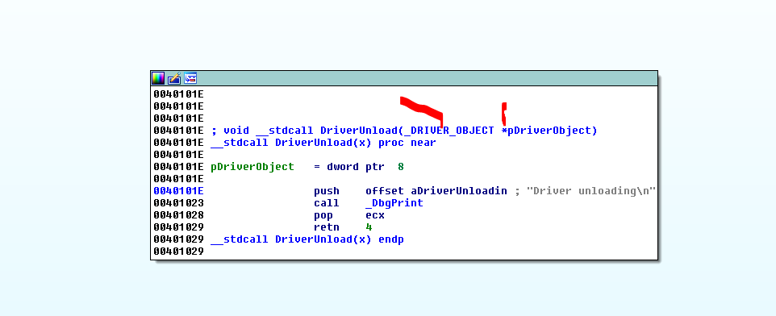
Asi que todo coincide, esta sera la rutina cuando el driver se descargue y como vemos imprimirá el mensaje “Driver unloading” usando la función _DbgPrint.
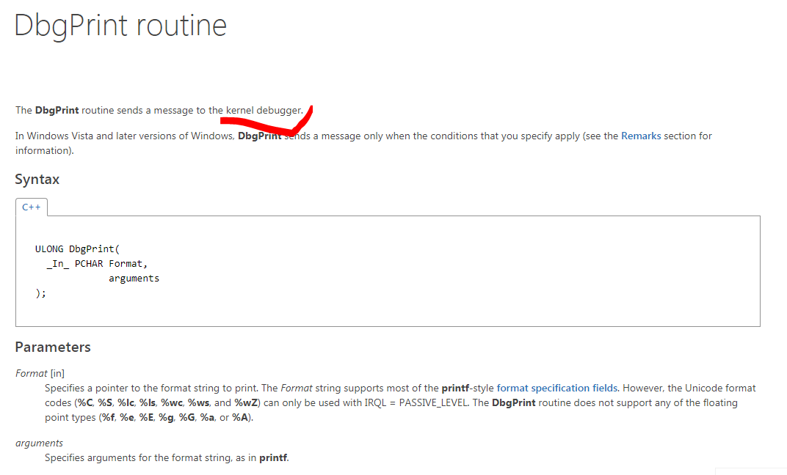
Si está siendo debuggeado se verá en el LOG del debugger como vimos en el Windbg y en el IDA el mensaje de “Hola Mundo” y “Driver unloading” al cargar y descargar.
Esta versión no tiene mucho más, veremos la otra que compilamos con WDK 10, a si la reversamos un poco, evitaremos parte de la inicialización y nos concentraremos en como maneja la estructura y el puntero a DriverUnload.
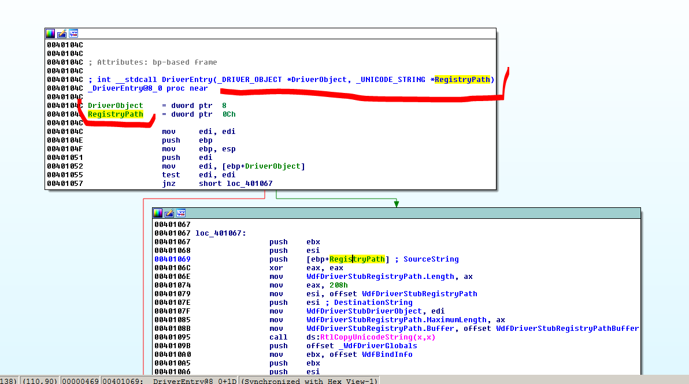
Vemos que la función _DriverEntry@8 tiene los mismos argumentos que son los dos punteros a las estructuras que vimos en la otra versión.
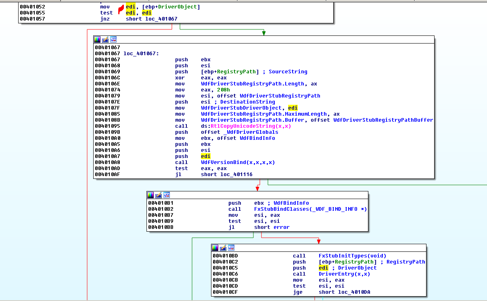
Vemos que EDI toma la dirección de la estructura DriverObject y la mantiene en toda la función hasta la salida de la misma cuando hace POP EDI antes del RET.
Puedo hacer click derecho - RENAME en EDI y en el rango donde se mantiene el mismo valor renombrarlo a p_DriverObject.
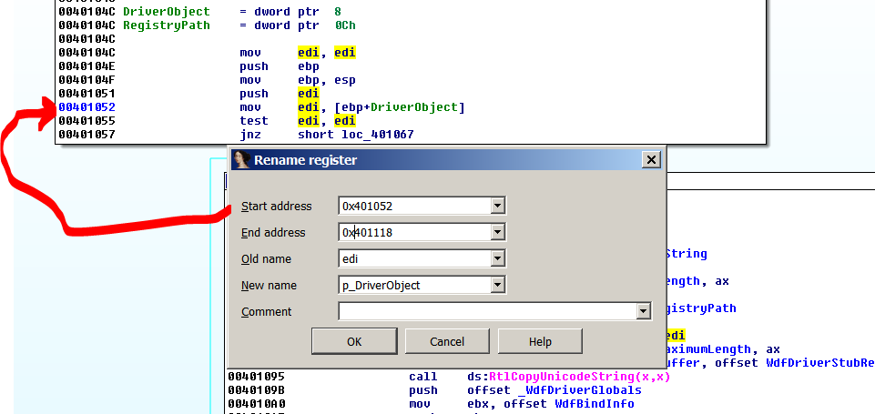
Allí vemos que se mantiene la etiqueta hasta el final donde el POP EDI machaca el valor.
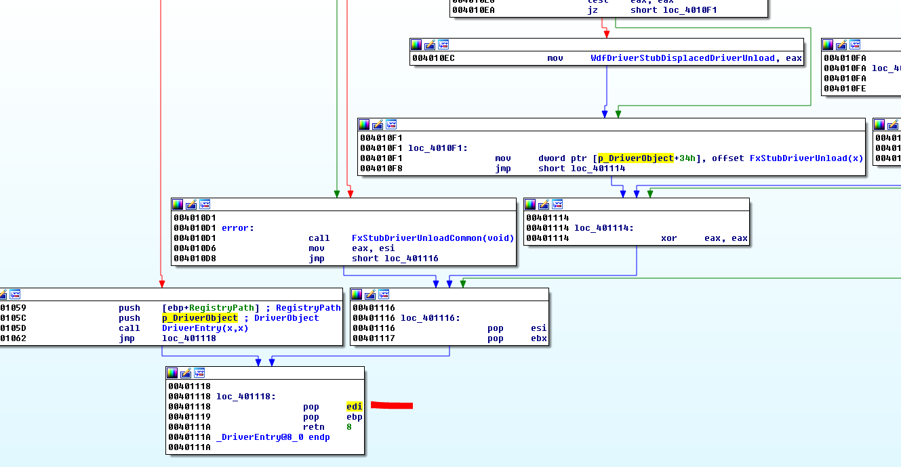
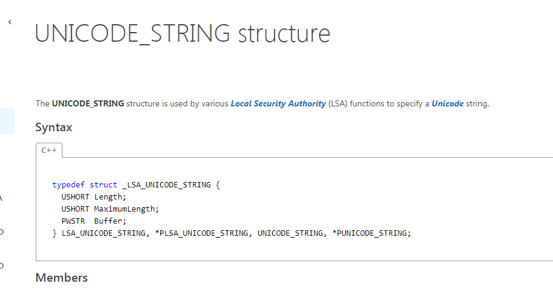
Bueno es una estructura que tiene un USHORT (word) con el largo de la string ,otro con el máximo largo del buffer y un puntero a un buffer con la string unicode allí o sea que siempre su largo sera 0x8, dos words mas un dword del puntero.
Length
Specifies the length, in bytes, of the string pointed to by the Buffer member, not including the terminating NULL character
MaximumLength
Specifies the total size, in bytes, of memory allocated for Buffer. Up to MaximumLength bytes may be written into the buffer without trampling memory.
Buffer
Pointer to a wide-character string. Note that the strings returned by the various LSA functions might not be null-terminated.
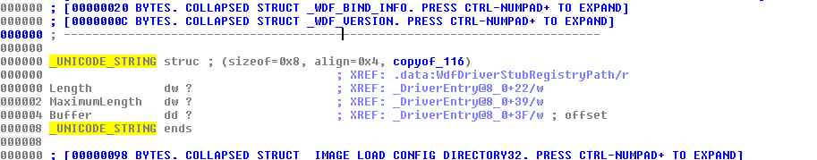
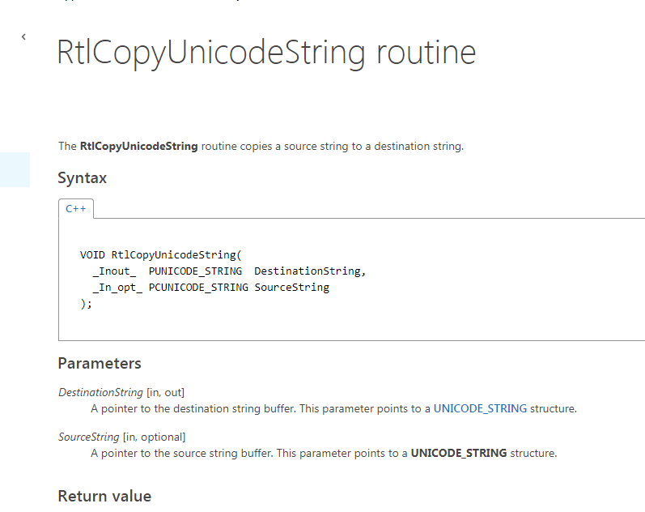
Vemos que esta función tiene como argumento un puntero a la estructura source UNICODE_STRING y como destination un puntero a otro UNICODE_STRING que también tendrá un puntero a un buffer destination.
Allí vemos los dos argumentos, el source que es RegistryPath que es un puntero a una estructura UNICODE_STRING y ESI tiene el destination del mismo tipo.
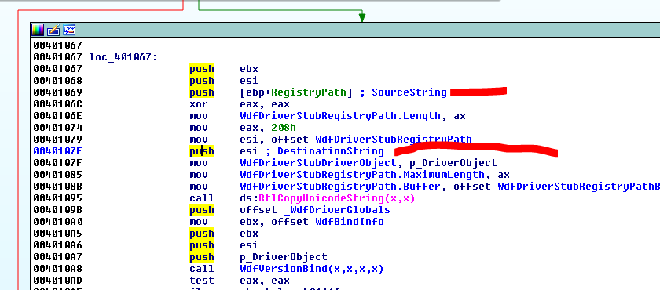
Vemos que ESI apunta a la sección data, allí esta esa variable del mismo tipo.
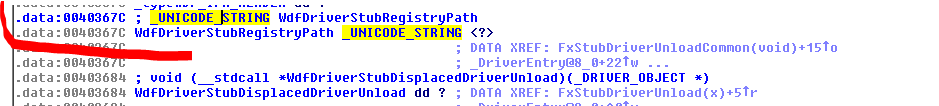
Como vimos que el largo era 0x8, en la sección data la siguiente dirección que se muestra sera 0x8 mas adelante o sea
Python>hex(0x40367c+0x8)
0x403684
Allí vemos como antes de llamar a copiar inicializa la estructura de destino, le pone un cero al valor lenght ya que esta vacía por ahora, le pone 0x208 como máximo y lo guarda en MaximumLenght y guarda el puntero al buffer allí en offset WdfDriverStubRegistryPath.
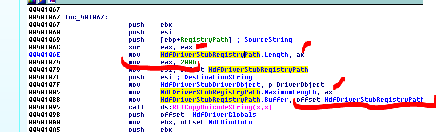
El buffer en si tiene 0x104 words o sea 0x208 o 520 decimal
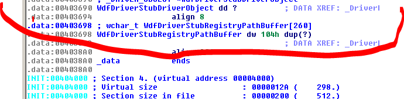
hex(0x104*2)
0x208
Python>(0x104*2)
520
Allí mostraba que era un array de 260 del tipo wchar_t (2 bytes) o sea 260 x 2 es igual a 520.
Asi que esta todo bien el puntero apunta a un buffer de 0x208 y el máximo es 0x208 todo perfecto.
No olvidemos esto
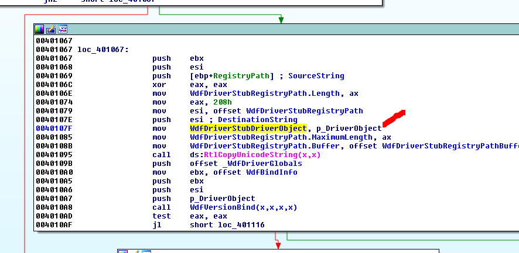
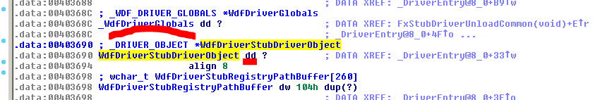
Vemos que es una variable de 4bytes dd ya que es un puntero a la estructura _DRIVER_OBJECT.
Luego hay un par de funciones de inicialización no documentadas al menos no las encontré y no tiene tanta importancia es pura inicialización y luego llega al DriverEntry que es equivalente al del driver anterior.
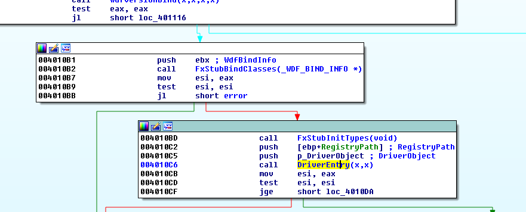
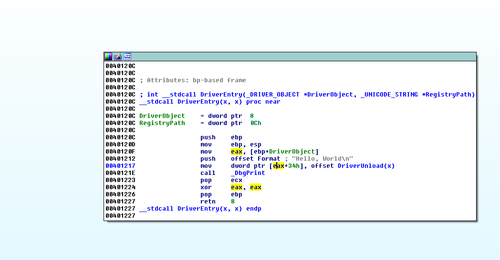
Dentro si hacemos lo mismo dela vez anterior y vamos a LOCAL TYPES y sincronizamos la estructura DRIVER_OBJECT.
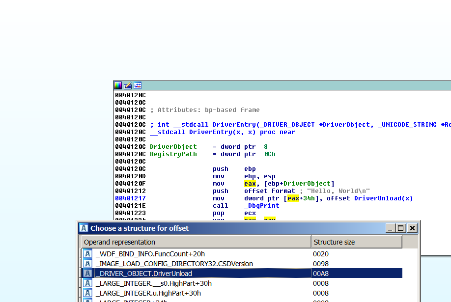
Vemos que es similar al anterior guardara la dirección de la función que escribimos DriverUnload en la misma posición de la estructura, para llamarla al descargarse.
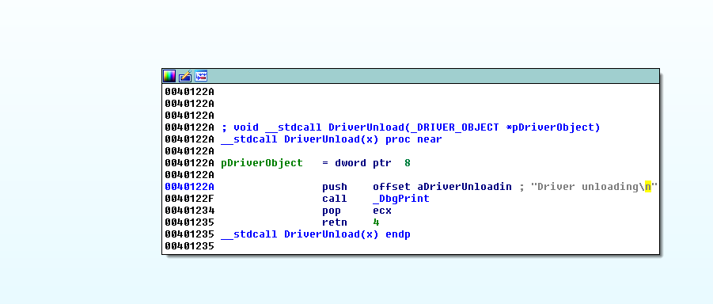
Vemos que como el campo DriverUnload es distinto de cero, saltara a la parte rosada donde guardara nuestro puntero en esa variable de la sección data llamada WdfDriverStubDisplacedDriverUnload.
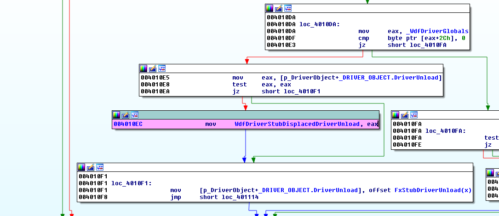
Y ademas pisa el DriverUnload con una función que no es mía llamada FxStubDriverUnload y que si la vemos.
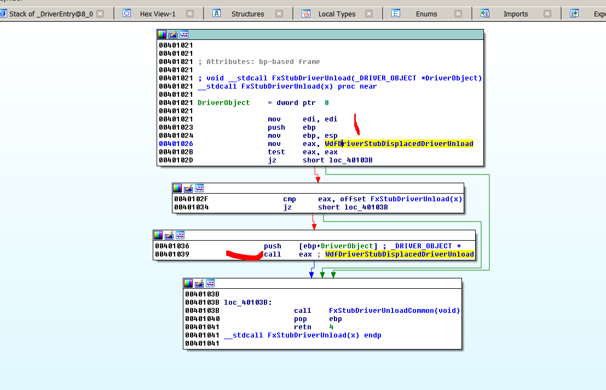
Al descargar el driver vendrá entonces a FxStubDriverUnload , pero luego cargara nuestra función DriverUnload de la variable WdfDriverStubDisplacedDriverUnload ya que allí la había guardado y salta en el CALL EAX de la misma forma que en el ejemplo anterior solo que dando un poco mas de vueltas.
En la próxima parte trataremos de compilar un driver que se llame a un IOCTL desde una aplicación de user, sabiendo que esta es una de las formas en las que se explotan generalmente los drivers (no es la única)
Hasta la próxima
Ricardo Narvaja